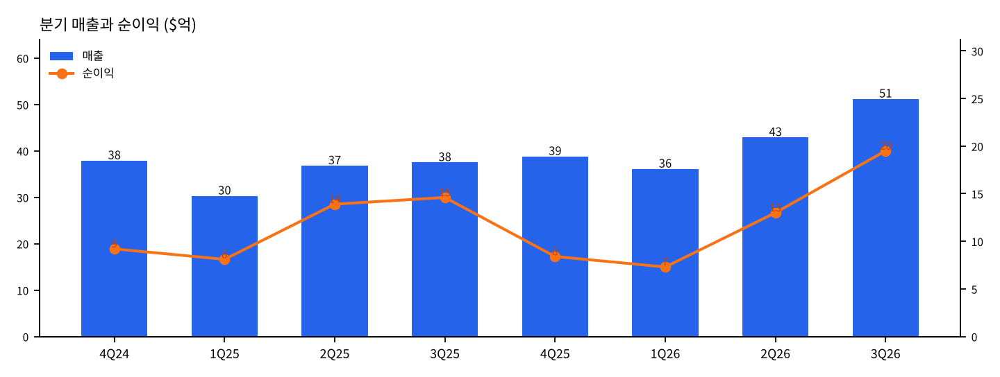
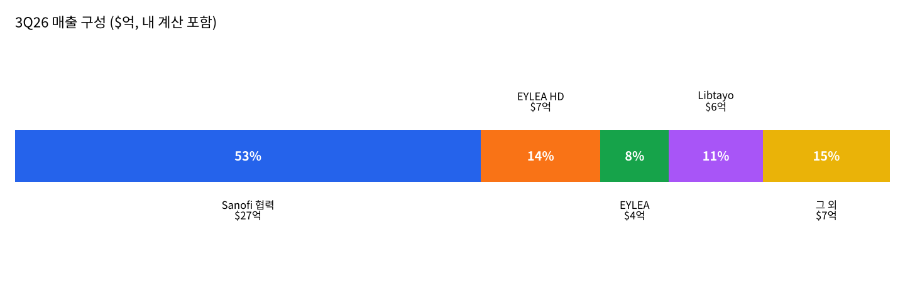
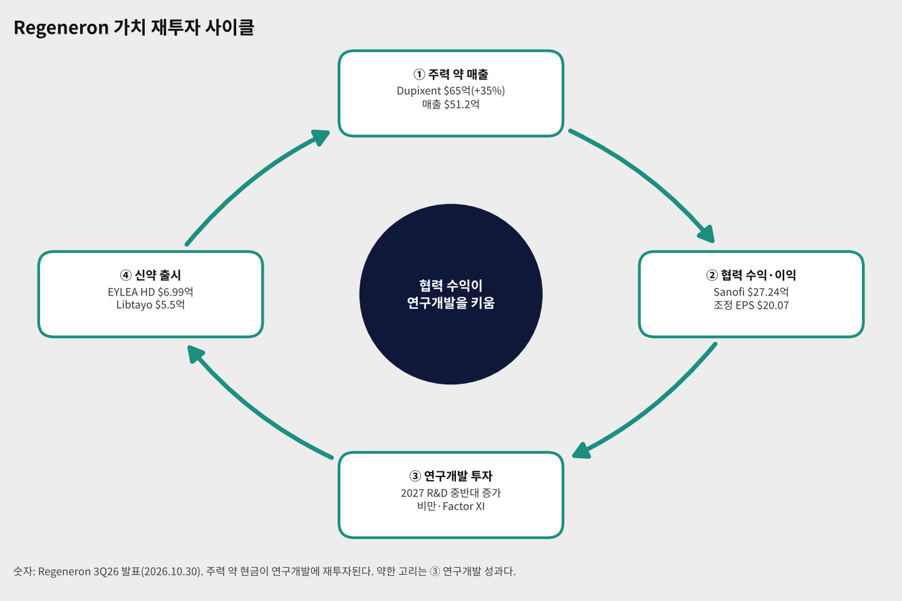

Regeneron은 직접 키운 항체 신약 플랫폼으로 약을 만들고, 일부는 Sanofi와 이익을 나누고 일부는 직접 판다.
| 항목 | 내용 |
|---|---|
| 종목 | Regeneron (REGN) · NASDAQ · 바이오 · 뉴욕 태리타운 |
| 최근 분기(3Q26) | 매출 $51.2억, 조정 EPS $20.07 |
| 핵심 상품 | Dupixent, EYLEA HD, EYLEA, Libtayo |
| 직원 수 | 약 15,410명(트레이딩뷰) |
| 멀티플 | PER·PEG·P/S는 08~10 항목 표 참조 |
| 직책 | 인물 | 역할·특징 |
|---|---|---|
| 회장·CEO | 레너드 슐라이퍼(Leonard Schleifer) | 이사회 공동 의장·사장·CEO를 겸임 |
| CFO | 크리스토퍼 페니모어(Christopher Fenimore) | 3분기 연속 매출·EPS 두 자릿수 성장이라고 설명 |
경영 스타일: 과학 중심 연구개발. 이익의 상당 부분을 연구개발에 쓰고 파트너와 위험을 나눈다.
VelocImmune 등 자체 항체 플랫폼에서 신약 후보를 꾸준히 만든다.
비만·Factor XI·RNAi 등으로 확장. 2027년 연구개발비는 중반대 두 자릿수 증가 예상.
다음 실적발표는 세 가지 질문에 답하는 자리다.
1. EYLEA HD가 EYLEA 감소를 메우나?
2. Dupixent 성장이 이어지나?
3. 연구개발 증가가 이익을 눌러도 신약이 나오나?
한 줄 판정 규칙: 첫 질문(EYLEA HD)이 EYLEA 감소를 메우면 약한 고리인 ③ 안과 부문 회복이 확인된다.
일정: 4Q26 실적 발표는 2027.01.29 예정(트레이딩뷰). cemdisiran FDA 결정은 2026년 11월 예정.
| 분기 | 매출 | 순이익 | EPS | 조정 EPS | 특이 사항 |
|---|---|---|---|---|---|
| 4Q24 | $37.9억 | $9.2억 | 8.06 | 12.07 | |
| 1Q25 | $30.3억 | $8.1억 | 7.27 | 8.22 | |
| 2Q25 | $36.8억 | $13.9억 | 12.81 | 12.89 | |
| 3Q25 | $37.5억 | $14.6억 | 13.62 | 11.83 | |
| 4Q25 | $38.8억 | $8.4억 | 7.86 | 11.44 | |
| 1Q26 | $36.1억 | $7.3억 | 6.75 | 9.47 | |
| 2Q26 | $42.9억 | $13.0억 | 12.23 | 14.29 | |
| 3Q26 | $51.2억 | $19.5억 | 18.45 | 20.07 | Dupixent·EYLEA HD·Libtayo 모두 분기 최고 매출 |
매출은 트레이딩뷰 스캐너의 분기 총매출이라 회사가 발표한 순매출과 다를 수 있다. 분기 EPS 변동은 인수 연구개발비(IPR&D)와 Sanofi 협력 수익 시점에 따라 크다. 매출·순이익·EPS(GAAP 희석)는 트레이딩뷰 스캐너, 조정 EPS는 트레이딩뷰 실적 페이지의 Reported 값이다. 분기 정렬은 오래된 분기→최신이다.

흐름 요약: 최근 분기 매출은 $51.2억로 전년 동기 $37.5억 대비 +36.5%, 순이익은 $19.5억(전년 $14.6억)다. 최근 4분기 GAAP EPS는 $45.29, 조정 EPS는 $55.27다.
| 항목 | 내용 | 3Q26 금액 | 비고 |
|---|---|---|---|
| Sanofi 협력 수익 | Dupixent 이익 배분 등 | $27.24억 | +68% |
| EYLEA HD 미국 | 안과 | $6.99억 | +62% |
| EYLEA 미국 | 안과 | $4.00억 | −41% |
| Libtayo | 암 | $5.5억 | +51%(전 세계) |
| 그 외(내 계산) | 기타 매출 | $7.4억 | 총 $51.16억에서 뺀 값 |

매출의 절반 이상이 Sanofi 협력 수익이라 Dupixent 성장에 크게 기댄다.
Regeneron은 과학으로 중증 질환 치료제를 발견하고 상업화하는 것을 목표로 한다.
| 축 | 내용 |
|---|---|
| 핵심 약 | Dupixent, EYLEA HD, Libtayo |
| 협력 | Sanofi 확대 |
| 연구개발 | 2027년 중반대 두 자릿수 증가 |

| 이동평균 | 값 | 종가 대비 | 위치 |
|---|---|---|---|
| 5일선 | $949.83 | -1.2% | 종가 아래 |
| 20일선 | $907.85 | +3.3% | 종가 위 |
| 50일선 | $827.27 | +13.4% | 종가 위 |
| 100일선 | $787.79 | +19.1% | 종가 위 |
| 200일선 | $750.72 | +24.9% | 종가 위 |
52주 고가 $991.73(2026-11-04)·저가 $591.52(2026-06-02) 범위에서 종가 $937.99는 20일선, 50일선, 100일선, 200일선을 웃돌고 5일선은 밑돈다.
| 규칙 | 기준 | 현재 값 | 신호 |
|---|---|---|---|
| 장기 추세 필터 | 종가 vs 200일선 | $937.99 > $750.72 | 매수 |
| 중장기 교차 | 50일선 vs 200일선 | $827.27 > $750.72 | 매수 |
| 단기 교차 | 20일선 vs 50일선 | $907.85 > $827.27 | 매수 |
| 돈키언 채널 | 55일 고가 $991.73 / 저가 $722.02 | 중간값 $856.88 위 | 매수 |
| 1개월 모멘텀 | 21거래일 수익률 | +16.4% (기준 $805.67) | 매수 |
| 3개월 모멘텀 | 63거래일 수익률 | +12.5% (기준 $834.04) | 매수 |
| 6개월 모멘텀 | 126거래일 수익률 | +46.0% (기준 $642.59) | 매수 |
| 12개월 모멘텀 | 252거래일 수익률 | +29.3% (기준 $725.34) | 매수 |
| 종합 (8개 평균) | +1.00 | 강한 매수 |
해석: 매수 신호 8개(장기 추세 필터, 중장기 교차, 단기 교차, 돈키언 채널, 1개월 모멘텀, 3개월 모멘텀, 6개월 모멘텀, 12개월 모멘텀), 매도 신호 0개(없음). CTA 점수 +1.00(강한 매수). 14일 ATR $33.68 (3.6%), 52주 고가 $991.73 · 저가 $591.52.
| 가격 | 기준 | 무엇이 바뀌나 |
|---|---|---|
| $991.73 | 55일 고가 | 돌파 시 채널 상단 갱신 |
| $856.88 | 돈키언 중간값 | 55일 채널 중간값 위/아래로 신호가 바뀜 |
| $834.04 | 3개월 모멘텀 기준가 | 종가가 이 가격 위면 3개월 신호 매수 |
| $805.67 | 1개월 모멘텀 기준가 | 종가가 이 가격 위면 1개월 신호 매수 |
| $750.72 | 200일선 | 종가가 이 선 위/아래인지로 장기 추세 신호가 바뀜 |
| $725.34 | 12개월 모멘텀 기준가 | 종가가 이 가격 위면 12개월 신호 매수 |
| $722.02 | 55일 저가 | 이탈 시 채널 하단 갱신 |
| $642.59 | 6개월 모멘텀 기준가 | 종가가 이 가격 위면 6개월 신호 매수 |
가격 수준은 신호가 바뀌는 기준선일 뿐 진입·청산 가격 제안이 아니다. 20일/50일 교차는 이동평균 자체가 움직여 단일 가격으로 표시하지 않았다. 일봉·주봉은 종가 기준 직접 계산(고저 데이터 미사용)이다.
| 악재 요인 | 내용 | 강도 |
|---|---|---|
| 안과 경쟁 | EYLEA 미국 −41%, 경쟁 압력 | 중간 |
| 소송·조사 | 진행 중인 소송과 정부 조사가 위험 요인 | 중간 |
| 협력 의존 | 매출의 약 53%가 Sanofi 협력 수익(내 계산) | 참고 |
| 티커 | 회사 | PER(TTM) | PEG | P/S | EPS 성장(YoY) |
|---|---|---|---|---|---|
| REGN | Regeneron | 17.0배 | 0.74 | 5.74배 | +23% |
| VRTX | Vertex | 34.5배 | 3.59 | 10.47배 | +10% |
| AMGN | Amgen | 25.7배 | 0.80 | 6.41배 | +33% |
| GILD | Gilead | – | – | 6.86배 | -149% |
| ABBV | AbbVie | 49.2배 | 0.15 | 7.86배 | +338% |
비교 결론: Regeneron의 PER 17.0배는 Vertex·Amgen·AbbVie보다 낮다. PEG 0.74는 Vertex(3.59)·Amgen(0.80)보다 낮고 AbbVie(0.15)보다 높다.
현금·부채는 트레이딩뷰 스캐너 값이다. 현금이 부채를 크게 웃돈다.
| 지표 | 값 | 출처 | 해석 |
|---|---|---|---|
| 현금·단기투자 | $93억 | 트레이딩뷰 스캐너(최근 분기) | |
| 총부채 | $27억 | 트레이딩뷰 스캐너(최근 분기) | |
| 순부채(부채−현금) | $-66억 | 내 계산 | 현금 대비 부채 부담 |
| 잉여현금흐름(TTM) | $38억 | 트레이딩뷰 스캐너 | |
| TTM 매출 | $169억 | 트레이딩뷰 스캐너 |
| 기준 | 매출 | P/S | 비고 |
|---|---|---|---|
| 내 계산(종가 ÷ 최근 4분기 매출 합계) | $169.0억 | 5.74배 | 시총은 정렬용 데이터에서만 사용 |
| 동종(트레이딩뷰) | – | VRTX 10.47배 · AMGN 6.41배 · GILD 6.86배 · ABBV 7.86배 | 11.19 |
해석: 현금이 부채보다 많은 순현금 구조다(아래 표). 연구개발 투자 여력이 크다(내 해석).
EBITDA는 영업활동의 현금 창출력을 보는 지표이고, PEG는 PER을 EPS 성장률로 나눈 값이다. EBITDA·FCF는 트레이딩뷰 TTM 값이다.
| 지표 | 값 | 산출 |
|---|---|---|
| EBITDA(TTM) | $56억 | 트레이딩뷰 스캐너 |
| EBITDA 마진 | 33.1% | EBITDA ÷ TTM 매출(내 계산) |
| FCF 마진 | 22.5% | FCF ÷ TTM 매출(내 계산) |
| PER(GAAP TTM) | 20.7배 | $937.99 ÷ $45.29 |
| PER(조정 TTM) | 17.0배 | $937.99 ÷ $55.27 |
| 방식 | PER | EPS 성장률 | PEG | 판정 |
|---|---|---|---|---|
| 조정 EPS (TTM $55.27) | 17.0배 | +23% ($45.01 → $55.27) | 0.74 | 투자 적격 |
| GAAP EPS (TTM $45.29) | 20.7배 | +8% ($41.76 → $45.29) | 2.45 | 기준 초과 |
판정: 조정 EPS 기준 PEG 0.74 → 1.0 이하(투자 적격) PEG 기준은 1.0 이하 투자 적격, 0.5 이하 적극 매수다. EPS 성장률은 최근 4분기 EPS 합계를 직전 4분기 합계와 비교한 값(내 계산)이고, 일회성 항목이 있으면 조정 EPS 행을 함께 본다.

Regeneron의 사이클: 주력 약 현금이 연구개발에 재투자돼 신약을 만들고, 신약이 다시 매출이 되는 순환이다.
| 고리 | 현재 숫자·근거 |
|---|---|
| ① 주력 약 매출 | 3Q26 Dupixent 전 세계 $65억(+35%) · 매출 $51.16억(+36%) |
| ② 협력 수익·이익 | Sanofi 협력 수익 $27.24억(+68%) · 조정 EPS $20.07 |
| ③ 연구개발 투자 | 2027 연구개발비 중반대 두 자릿수 증가 · 비만 3상 4Q 시작 |
| ④ 신약 출시 | EYLEA HD 미국 $6.99억(+62%) · Libtayo $5.5억(+51%) |
사이클의 특징: 약한 고리는 ③ 연구개발 성과다(비만·Factor XI 결과는 2027년 이후). "(내 해석)"은 보고서 수치가 아닌 해석이다.